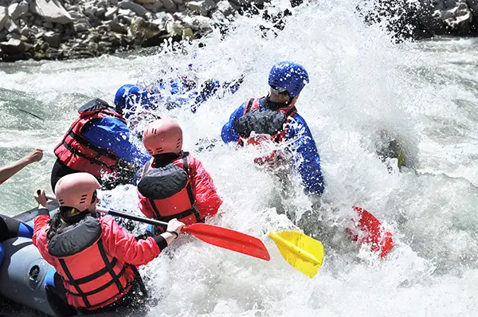
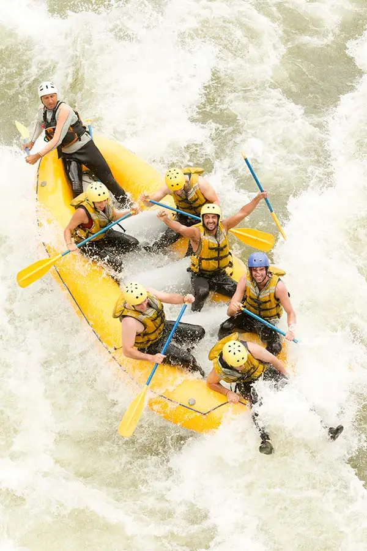
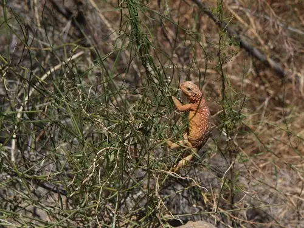

River Raid Trips

The Frozen Pools
This is the most relaxing Raid that leads you through
the Fays Forest, where the trees grow up and over the
river, and into the Frozen Pools. This is the end of the
river where you can swim in the still water of the lake
and small pools. This is also the recommended one to
take that brave grandma on as well.

The Mountain Goat Escape
Ride our winding river as it follows the rocky cliffs.
You will follow the river as it leads you past the
Hunters Den and into the Windy Rapids. The Windy Rapids
will send you speading towards the Meditating Currents,
a slow flowing part of the river. Here, you might be
able to see the Mountain Goats as they travers the rocky
terrain. Then you will follow the river a little ways
more where you will find the end of your Raid.

The Hunters Den
At first, a relaxing ride that leads to the rocky cliffs
that stand tall over the river. Follow these cliffs as
they guide you to The Hunters Den. A small cave system
that leads to the other side of the rivers bend. At the
end of the cave, you will ride the Windy Rapids that
will give you a fast ride down the river to where you
will reach the end of your Raid.

The Dragon's Hoard
In this Raid, you will be going farther up river past
all the other Raids. Here, you will ride the Howling
Wails, the strongest currents in our river, as they lead
you through the mountains forest. When you reach the end
of the Howling Wails, you will be given the opportunity
to take a small hike to find the Dragon's Treasure. If
you find any, bring it back to receive a reward. Once
you are back in your raft, you will continue down the
river where you will reach the end of your Raid.